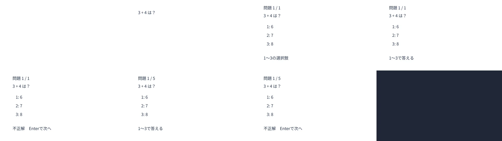
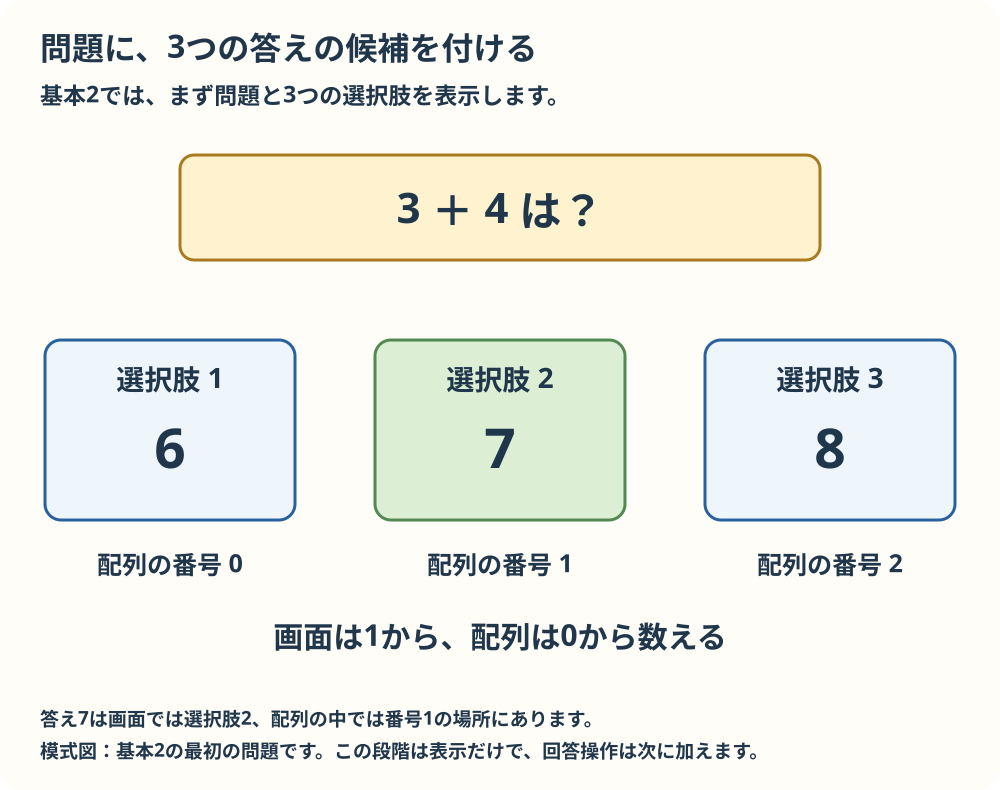
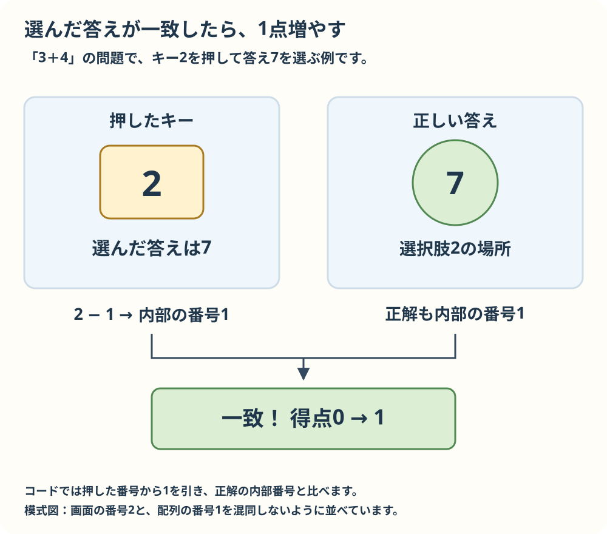

3択クイズを作る
始める前に
ZIPを展開してできたフォルダーでindex.htmlを開きます。ZIPにはひな型の3ファイルが入っています。
WindowsでZIPを展開する（動画）
各段階の変更を上から順に加え、保存したら index.html を開くか再読み込みします。
ステップ 1：問題を表示する
このステップの見本を図で見る
questions[0].text
最初の問題のtextを取り出す
ctx.fillText(questions[0].text, 80, 90)
左から80、上から90に問題が出る
ゲーム画面とコードの前後を見る

このステップの見本
この行を足す前 変わったコードの一例（script.js）
{text: "3 + 4 は？", choices: ["6", "7", "8"], answer: 1, explanation: "3 + 4 = 7"},
見本で確かめること
「3 + 4 は？」と表示されます。
目標
最初の問題を表示します。
確認欄までは準備中です。作業を順に進め、確認欄で保存して動作を確かめます。
書く場所と置き換えるコード
問題のデータを用意する
作業用フォルダーの script.js で、次の目印を探し、その直前に書きます。
目印
function start()書き足すコード
const questions = [
{text: "3 + 4 は？", choices: ["6", "7", "8"], answer: 1, explanation: "3 + 4 = 7"},
{text: "10 - 6 は？", choices: ["4", "3", "5"], answer: 0, explanation: "10 - 6 = 4"},
{text: "2 × 3 は？", choices: ["5", "7", "6"], answer: 2, explanation: "2を3回足すと6"},
{text: "8 ÷ 2 は？", choices: ["2", "6", "4"], answer: 2, explanation: "8を2つに分けると4"},
{text: "5 + 4 は？", choices: ["9", "8", "10"], answer: 0, explanation: "5 + 4 = 9"}
];
let order, index, score, state, message;
配列は複数の値を順に並べます。各問題の text は問題文、choices は候補、answer は正解の配列番号、explanation は解説です。番号は0から始まるので、6・7・8のうち7を示す answer は1です。
最初の問題と状態を決める
作業用フォルダーの script.js で、次の範囲を探して置き換えます。
置き換える範囲
function start() {
}
function update() {
}
置き換えるコード
function start() {
order = questions.slice(0, 1);
index = 0; score = 0; state = "answer"; message = "";
}
function update() {
}
= は右の値を左に入れ、; は文の区切りです。slice(0, 1) は先頭から1問を取り出します。order は出題する問題、index は問題番号、score は正解数です。state を回答中にし、message を空にします。
最初の問題文を描く
作業用フォルダーの script.js で、次の範囲を探して置き換えます。
置き換える範囲
function draw() {
ctx.clearRect(0, 0, canvas.width, canvas.height);
}
置き換えるコード
function draw() {
ctx.clearRect(0, 0, canvas.width, canvas.height);
ctx.fillStyle = "#26334a"; ctx.font = "26px sans-serif";
ctx.fillText(questions[0].text, 80, 90);
}
ctx はひな型が用意した描画の道具です。fillStyle は色、font は文字の大きさと書体を設定します。questions[0].text は先頭の問題文で、座標 (80, 90) に描きます。
保存後の確かめ方
保存してゲーム画面を更新する（動画）
index.html を再読み込みします。「3 + 4 は？」と表示されます。 この段階の見本を開く
小さな練習
問題文を変えて表示を確かめます。 練習後はコードを元に戻してください。
ステップ 2：3つの選択肢を出す
このステップの見本を図で見る
choices = ["6", "7", "8"]
配列は0番から数える
表示番号 = i + 1、y = 180 + i × 55
6・7・8がy=180・235・290に並ぶ
ゲーム画面とコードの前後を見る
このステップの見本
ctx.fillText(questions[0].text, 80, 90);
変わったコードの一例（script.js）if (state === "result") {
見本で確かめること
6・7・8の選択肢が1〜3に並びます。
目標
問題に3つの答えを並べます。
確認欄までは準備中です。作業を順に進め、確認欄で保存して動作を確かめます。
書く場所と置き換えるコード
結果画面を用意する
作業用フォルダーの script.js で、次の目印を探し、その直後に書きます。
目印
ctx.fillStyle = "#26334a"; ctx.font = "26px sans-serif";
書き足すコード
if (state === "result") {
ctx.fillText("結果 " + score + " / 1", 80, 120);
ctx.fillText("R で再開", 80, 180);
return;
}
state が "result" なら1問中の正解数を描き、return で draw() を終えます。回答操作は次のステップで加えます。
今の問題と選択肢を表示する
作業用フォルダーの script.js で、次の範囲を探して置き換えます。
置き換える範囲
ctx.fillText(questions[0].text, 80, 90);
置き換えるコード
const q = order[index];
ctx.fillText("問題 " + (index + 1) + " / " + (1), 80, 60);
ctx.fillText(q.text, 80, 110);
for (let i = 0; i < q.choices.length; i++) ctx.fillText((i + 1) + ": " + q.choices[i], 100, 180 + i * 55);
ctx.fillText("1〜3の選択肢", 80, 380);
q は order の今の問題です。配列番号は0からなので、画面の番号には1を足します。for で候補を取り出し、縦の位置を55ずつずらして並べます。

問題「3＋4」に、6・7・8の3つの候補を並べます。画面の番号は1・2・3ですが、配列の番号は0・1・2です。答え7は画面では2、配列では1の場所にあります。
この段階は表示だけです。問題と候補を大きく並べた模式図で、回答操作は基本3で追加します。
保存後の確かめ方
6・7・8の選択肢が1〜3に並びます。 この段階の見本を開く
小さな練習
問題文を変えて表示を確かめます。 練習後はコードを元に戻してください。
ステップ 3：答えを判定する
このステップの見本を図で見る
このステップの見本
ctx.fillText("1〜3の選択肢", 80, 380);
変わったコードの一例（script.js）ctx.fillText(state === "answer" ? "1〜3で答える" : message + " Enterで次へ", 80, 380);
見本で確かめること
2を押すと正解になり、Enterで結果へ進みます。
目標
数字キーで正誤を調べます。
確認欄までは準備中です。作業を順に進め、確認欄で保存して動作を確かめます。
書く場所と置き換えるコード
回答後の案内を切り替える
作業用フォルダーの script.js で、次の範囲を探して置き換えます。
置き換える範囲
ctx.fillText("1〜3の選択肢", 80, 380);
置き換えるコード
ctx.fillText(state === "answer" ? "1〜3で答える" : message + " Enterで次へ", 80, 380);
条件 ? A : B は条件が成り立てばA、そうでなければBを選びます。回答中と回答後で案内を変えます。
キーを受け取る準備をする
作業用フォルダーの script.js で、次の範囲を探して置き換えます。
置き換える範囲
function gameLoop()置き換えるコード
window.addEventListener("keydown", event => {
});
function gameLoop()keydown はキーを押したときに起きます。続けて回答の処理を加えます。
押しっぱなしを除いて再開する
作業用フォルダーの script.js で、次の目印を探し、その直後に書きます。
目印
window.addEventListener("keydown", event => {
書き足すコード
if (event.repeat) return;
if (event.key.toLowerCase() === "r") { start(); return; }
event.repeat は押しっぱなしの繰り返しです。toLowerCase() で小文字にして R を調べ、start() で戻します。動いている gameLoop() は再び呼びません。
選択肢と正解を比べる
作業用フォルダーの script.js で、次の目印を探し、その直後に書きます。
目印
if (event.repeat) return;
if (event.key.toLowerCase() === "r") { start(); return; }
書き足すコード
if (state === "answer" && ["1", "2", "3"].includes(event.key)) {
const choice = Number(event.key) - 1;
const correct = choice === order[index].answer;
if (correct) score++;
message = correct ? "正解！" : "不正解";
state = "feedback";
}
回答中の1〜3だけを受け取り、Number() で数字にして1を引きます。キー2は配列番号1です。answer と一致すれば score++ で1点を加え、結果を message に入れます。

キー2を押すと、選択肢2の答え7を選びます。コードでは2から1を引いた内部番号1と、正解の内部番号1を比べます。一致するので、得点は0から1へ増えます。
表示番号2と配列番号1を分けています。計画の『答え2』を内部のanswer=2と誤読しないよう、実コードのanswer=1に対応させました。
Enter で結果へ進む
作業用フォルダーの script.js で、次の範囲を探して置き換えます。
置き換える範囲
state = "feedback";
}
置き換えるコード
state = "feedback";
} else if (state === "feedback" && event.key === "Enter") state = "result";
この段階は1問だけなので、回答後の Enter で "result" に進みます。
保存後の確かめ方
2を押すと正解になり、Enterで結果へ進みます。 この段階の見本を開く
小さな練習
問題文を変えて表示を確かめます。 練習後はコードを元に戻してください。
ステップ 4：次の問題へ進む
このステップの見本を図で見る
このステップの見本
ctx.fillText("結果 " + score + " / 1", 80, 120);
変わったコードの一例（script.js）ctx.fillText("結果 " + score + " / 5", 80, 120);
見本で確かめること
答えた後にEnterを押して5問進め、結果を見ます。
目標
5問を順に出します。
確認欄までは準備中です。作業を順に進め、確認欄で保存して動作を確かめます。
書く場所と置き換えるコード
5問を出題する
作業用フォルダーの script.js で、次の範囲を探して置き換えます。
置き換える範囲
order = questions.slice(0, 1);
置き換えるコード
order = [...questions];
[...questions] は問題の配列をコピーし、5問すべてを order に入れます。
結果の問題数を変える
作業用フォルダーの script.js で、次の範囲を探して置き換えます。
置き換える範囲
ctx.fillText("結果 " + score + " / 1", 80, 120);
置き換えるコード
ctx.fillText("結果 " + score + " / 5", 80, 120);
結果を5問中の正解数で表示します。
問題数を表示する
作業用フォルダーの script.js で、次の範囲を探して置き換えます。
置き換える範囲
ctx.fillText("問題 " + (index + 1) + " / " + (1), 80, 60);
置き換えるコード
ctx.fillText("問題 " + (index + 1) + " / " + (5), 80, 60);
現在の問題番号と全5問を表示します。
次の問題か結果へ進む
作業用フォルダーの script.js で、次の範囲を探して置き換えます。
置き換える範囲
} else if (state === "feedback" && event.key === "Enter") state = "result";
置き換えるコード
} else if (state === "feedback" && event.key === "Enter") {
index++;
if (index === order.length) state = "result";
else { state = "answer"; message = ""; }
}
order.length は出題する問題の数です。index がその数に達したら結果へ進みます。まだ問題があれば回答中に戻し、前の message を消します。
保存後の確かめ方
答えた後にEnterを押して5問進め、結果を見ます。 この段階の見本を開く
小さな練習
問題文を変えて表示を確かめます。 練習後はコードを元に戻してください。
ステップ 5：結果と目標を確認する
このステップの見本を図で見る
このステップの見本
ctx.fillText("結果 " + score + " / 5", 80, 120);
変わったコードの一例（script.js）ctx.fillText("結果 " + score + " / 5" + (score >= 3 ? " クリア" : " もう一度"), 80, 120);
見本で確かめること
3問以上正解してクリア表示を確かめ、Rで再開します。
目標
結果にクリア条件を表示します。
確認欄までは準備中です。作業を順に進め、確認欄で保存して動作を確かめます。
書く場所と置き換えるコード
正解数で結果を分ける
作業用フォルダーの script.js で、次の範囲を探して置き換えます。
置き換える範囲
ctx.fillText("結果 " + score + " / 5", 80, 120);
置き換えるコード
ctx.fillText("結果 " + score + " / 5" + (score >= 3 ? " クリア" : " もう一度"), 80, 120);
score >= 3 は正解が3問以上かを調べます。条件が成り立てば「クリア」、そうでなければ「もう一度」を表示します。
保存後の確かめ方
3問以上正解してクリア表示を確かめ、Rで再開します。 この段階の見本を開く
小さな練習
問題文を変えて表示を確かめます。 練習後はコードを元に戻してください。